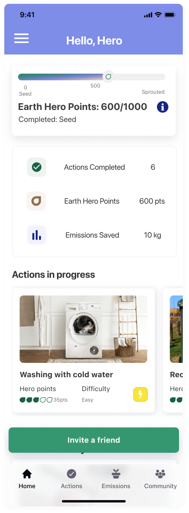

A research driven redesign of Earth Hero's homepage and actions experience to address user drop off and improve engagement and retention.
I led the redesign of the homepage and Actions experience as part of a cross-functional initiative to improve user retention and clarify how users engage with the platform. As design lead, I hired and managed the design team, defined design direction, and facilitated alignment across research, strategy, writing, and stakeholder partners. We used iterative testing, sprint reviews, and continuous collaboration to develop a research backed design direction.
Previous research revealed that approximately 50% of users dropped off within six weeks of initial use, indicating challenges with long-term engagement and retention. Research also showed that users struggled to understand:
Before exploring design solutions, the research team conducted an open card sort to understand how users naturally grouped and understood the platform's content and actions.
Based on usability findings, we refined the experience to improve clarity and engagement.
Key Improvements Included:
Each dot highlights a specific pain point discovered during research. Click to see what we found.

Data visualization was confusing to the user and they weren't sure how they were relevant to the application.
Actions completed seemed redundant to the information above, and it wasn't clickable with further actions to take place.
Actions in progress didn't make the user want to take more actions but instead confused them how an action could be 'in progress'.
I presented weekly progress to the stakeholder, facilitating updates around design direction and tradeoffs. When stakeholder preferences conflicted with research insights, I advocated for our decisions by presenting research evidence and explaining the long-term impact of design decisions.
After validating the design direction, I led the creation of final high-fidelity designs and handoff documentation.
The apprenticeship concluded before development began, so the designs were not implemented. However, the project successfully achieved its primary objective: validating a research-informed design direction.
This project strengthened my ability to lead cross-functional teams and translate research into actionable design direction. I learned the importance of creating alignment across disciplines and advocating for user needs while balancing stakeholder goals.
It also reinforced the value of early research and continuous validation in reducing uncertainty and guiding design decisions. If given more time, I would define measurable success metrics earlier and involve engineering sooner to ensure smoother implementation.